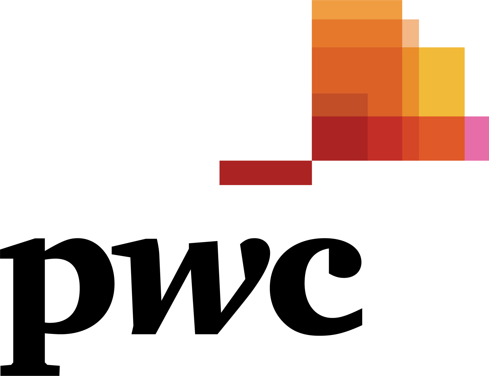

PwC SQLator
AI Model Engine:
gemini-3.7-flash
gemini-3.6-flash
gemini-3.5-flash
gemini-3.5-flash-lite
gemini-3.1-flash-lite
Generate and Optimize Fusion/EBS Queries
Oracle Fusion Cloud Applications and EBS R12 schema query generation and performance tuning.
Launch